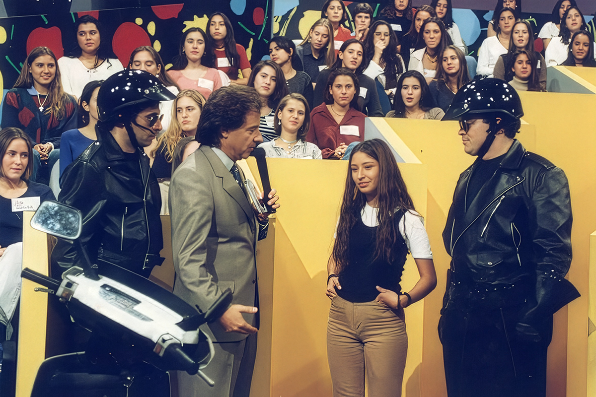
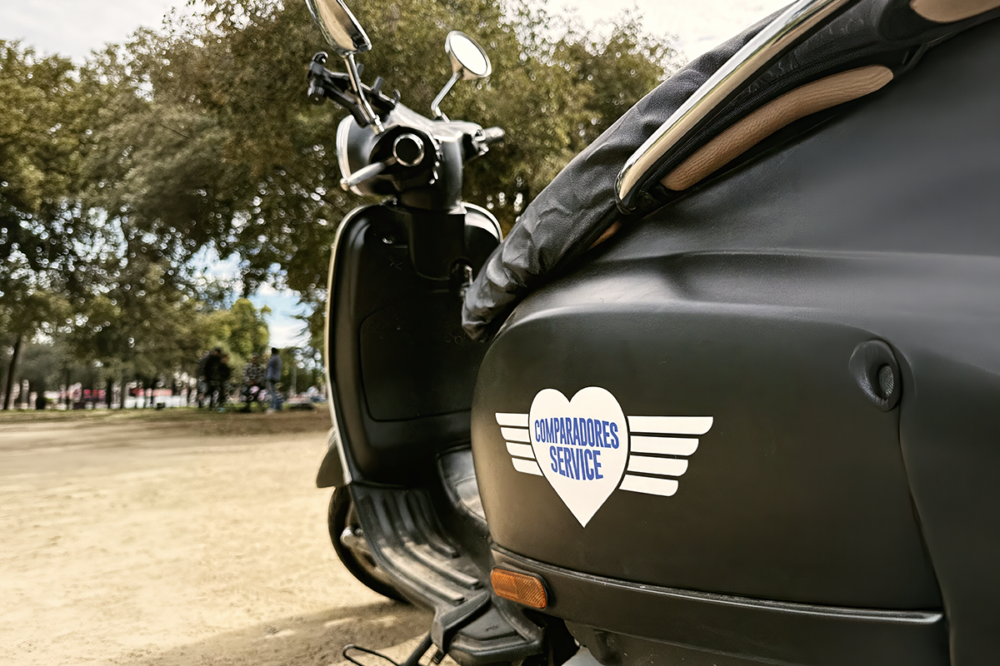
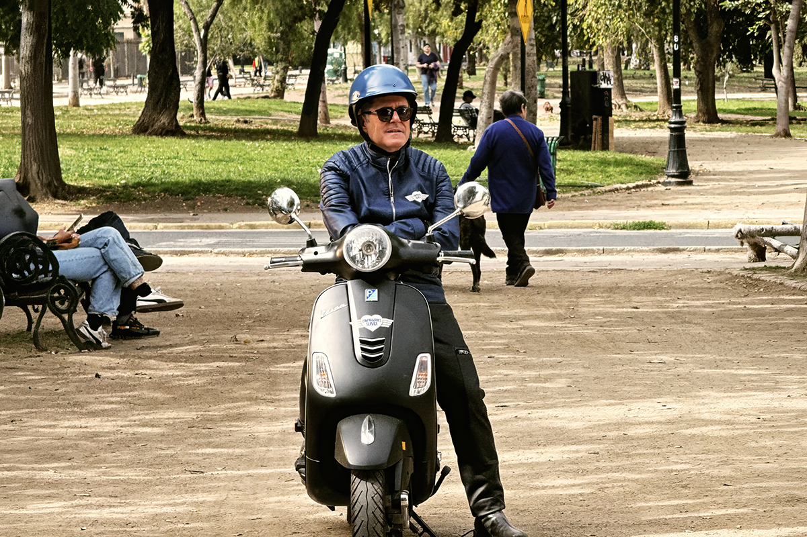

Comparadores Service
El regreso de un clásico noventero para resolver una problemática actual
El regreso de un clásico noventero para resolver una problemática actual

El recordado programa noventero “Venga Conmigo” marcó a toda una generación en Chile. Su exitoso segmento “Corazones Service” se transformó en un fenómeno cultural: una dupla que aparecía sin aviso cuando había algo pendiente, ya fuera una relación quebrada, una oportunidad no tomada o una historia que necesitaba cierre.
Ese código, profundamente instalado en la memoria colectiva, hoy vuelve con un giro. ComparaOnline lanzó su nueva campaña “Comparadores Service”, un guiño vintage, con algunos matices, a aquel segmento, donde los antiguos “mensajeros del amor” dejan momentáneamente su misión original para enfocarse en otra necesidad igual de concreta y urgente: ayudar a los chilenos a tomar mejores decisiones comparando antes de contratar.

El origen del sketch se remonta incluso antes de su masificación televisiva. Nació en Mediomundo (1991-1992), cuando Felipe Izquierdo, junto a Fernando Larraín y Nicolás Larraín, comenzó a desarrollar la idea con el productor Andrés Rillón. La inspiración venía de CHiPs, conocida en Chile como Patrulla Motorizada: motos que avanzan juntas, giran juntas y operan como una unidad. A partir de ese código visual, la idea evolucionó hacia lo que Rillón definió como “mensajeros del amor”.
Ya en “Venga Conmigo” (1994-1998), Izquierdo y Larraín encarnaron a “Reagan” y “Clinton”, dos cupidos motorizados que recorrían la ciudad para resolver conflictos de pareja. Vestidos de forma idéntica y con una lógica de brigada, llegaban sin previo aviso, solo con una dirección y una historia que cerrar. No explicaban demasiado. Actuaban.

Ese es precisamente el lenguaje que recoge la nueva campaña.
Hoy, lo que está pendiente no es una reconciliación amorosa, sino una decisión cotidiana que muchas veces se posterga: comparar antes de contratar un seguro. En la práctica, miles de personas siguen tomando decisiones sin revisar alternativas, aun cuando el mercado ofrece diferencias relevantes de precio para coberturas equivalentes.
“Comparadores Service” recoge esa lógica y la aterriza en algo simple: cuando hay algo pendiente, lo primero es comparar.
“En Chile vemos que se ha transformado casi en una costumbre el hecho de que muchas personas toman decisiones financieras sin comparar alternativas, especialmente cuando hay presión de tiempo. Esta campaña busca justamente eso: instalar la comparación como un paso natural antes de contratar, no como un esfuerzo adicional”, señala Javier Arriola, Brand Director de ComparaOnline.

La campaña incorpora además a Marcelo Comparini como un nuevo “Comparador Service”, ampliando esta lógica hacia un problema contemporáneo. Su participación refuerza el vínculo con una audiencia que reconoce el formato y entiende de inmediato el rol: alguien que aparece para desenredar lo que pudo estar complicado, hacernos accesible toda la información y ayudar a decidir.
Los Comparadores Service hoy no solo se quedarán en la calle. Estarán visibles en redes sociales, televisión e incluso en el cine.
Más allá del guiño nostálgico, la campaña tiene un objetivo claro: mover a la acción en el momento de decisión. En un entorno donde los seguros tienen condiciones similares por regulación, la diferencia real está en el precio. Sin embargo, una parte importante de los consumidores sigue contratando sin comparar.
 Actualidad
ActualidadHace aproximadamente 2 meses comenzamos con el cierre de lo que empezó en julio como el “Compariniverse”.
 Actualidad
ActualidadHace unos meses lanzamos Compariniverse: la primera campaña en Chile protagonizada por una celebridad completamente clonada con IA.
 Actualidad
ActualidadSi es la primera vez que lees un post de El Comparador, te contamos algo antes de que sigas tu lectura.